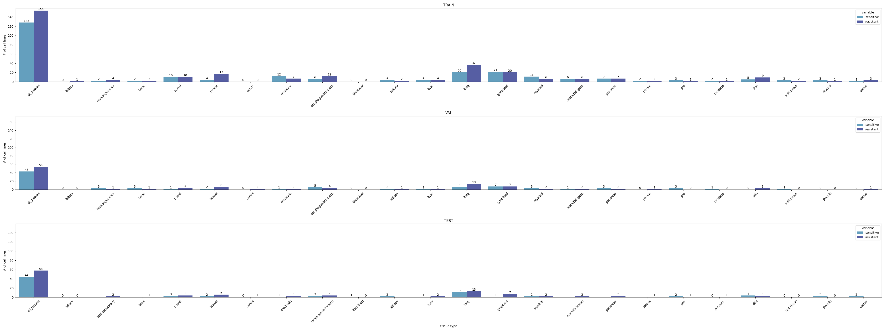
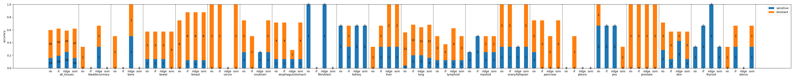
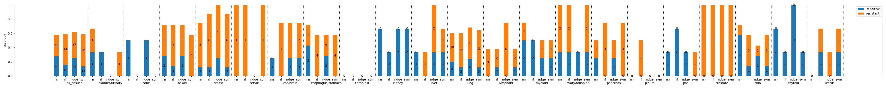
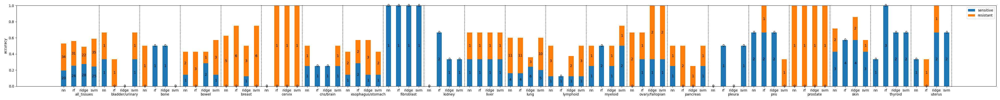
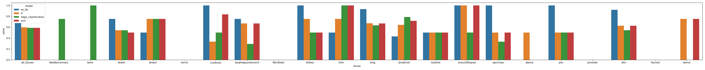
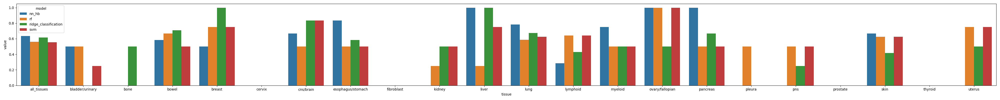
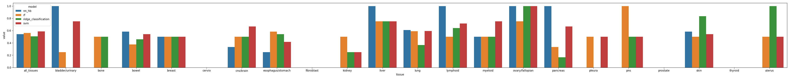

Report
Data Distribution

Evaluation - Accuracy (cdk4_6_genes)

Evaluation - Accuracy (cdk4_6_cancer)

Evaluation - Accuracy (pearson)

Evaluation - ROCAUC (cdk4_6_genes)
(for tissues that contain both classes in the testing dataset)

Evaluation - ROCAUC (cdk4_6_cancer)
(for tissues that contain both classes in the testing dataset)

Evaluation - ROCAUC (pearson)
(for tissues that contain both classes in the testing dataset)
